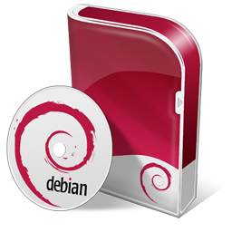

Promociones

Tendencias

Mac OS X es un sistema operativo de Apple para equipos de sobremesa y también para portátiles. La versión actual se denomina “OS X Mavericks”. Respecto a sus diferencias con Windows, se podría decir que se diferencia en todo: OS X se basa en Unix y usa HFS+ para integrar un sistema de archivos propio

Debian o Proyecto Debian, (en inglés, Debian Project) es una comunidad conformada por desarrolladores y usuarios, que mantiene un sistema operativo GNU basado en software libre. El sistema se encuentra precompilado, empaquetado y en formato deb para múltiples arquitecturas de computador y para varios núcleos.